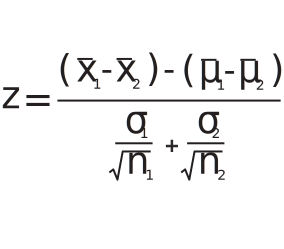

<!DOCTYPE html>
<html lang="en"></html>
<head>
    <script src='https://d3js.org/d3.v4.min.js'></script>
    <meta charset="UTF-8">
    <meta name="viewport" content="width=device-width, initial-scale=1.0">
    <link rel="stylesheet" href="two-sample-z.css">
    <link rel="stylesheet" href="paginate.css">
    <link rel="stylesheet" href="../common.css">
    <link rel="stylesheet" href="../../main.css">
</head>
<body>
    <div id="nav-home">
        <a href="../index.html"></a>
    </div>
    <div class="page-container">
        <div class="page-buttons">
            <button id="prev"><i class="arrow left"></i></button>
            <button id="next"><i class="arrow right"></i></button>
        </div>
        <div class="replay">
            <button id="replay-button"></button>
        </div>
        <h1>Two-Sample Z-Test</h1>
        <div id="section-1">
            <div id="page1">
                <div class="assumptions">
                    <p>Use cases: Two separately drawn samples each with N&ge;30</p>
                </div>
                <p>Your local paper reports that black & white cows produce <b>2.3</b> more gallons of milk per day than brown cows.</p>
                <p>You decide to see for yourself by sampling 30 black & white cows and 30 brown cows and measuring their milk production in a day.</p>
                <div id="samples" class="graph"></div>
                <p>Your experiment shows only a <b>1.6</b> gallon difference. If the paper is right, what is the probability you would see this difference by chance?</p>
            </div>
            <div id="page2">
                <p>First we need a standardized measure of <i>how</i> different our sample mean is from our null hypothesis mean: <b>μₓ₁₋ₓ₂ = 2.3</b></p>
                <div id="z-score-computation">
                    <div id="z-score-formula"></div>
                    <div id="z-score-compute"></div>
                </div>
                <div id="variance-graphs">
                    <div id="sample-1-variance-visual" class="graph"></div>
                    <div id="sample-2-variance-visual" class="graph"></div>
                </div>
            </div>
            <div id="page3">
                <div id="tail-switch">
                    <button id="one-tail-button">ONE-TAIL</button><button id="two-tail-button">TWO-TAIL</button>
                </div>
                <div id="normal-distribution"></div>
                <p id="conclusion"></p>
            </div>
        </div>
        <div id="section-2">
            <div class="center">
                <div id="samples-pg">
                    <input type="range" class="slider" id="sample-1-slider" min="30" max="40" step="0.1"></input>
                    <input type="range" class="slider" id="sample-2-slider" min="30" max="40" step="0.1"></input>
                </div>
                <div class="formula">
                    <div class="expression" id="pooled-sd-pg"></div>
                </div>
                <div id="null-distr-pg"></div>
            </div>
        </div>
    </div>
    <script src="two-sample-z.js" type="module"></script>
    <script src="paginate.js" type="module"></script>
</body>